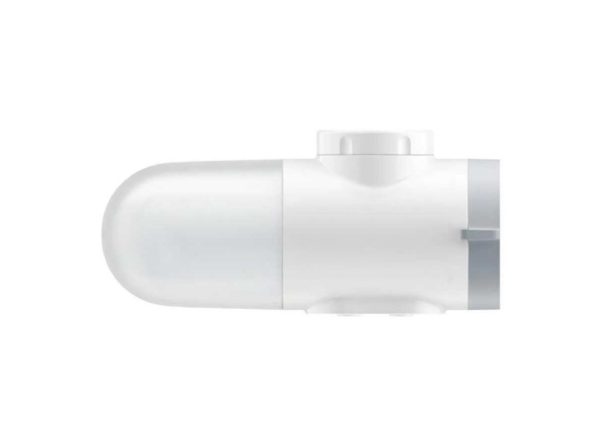

ก๊อกน้ำ
ก๊อกน้ำRP-F01
ตัวกรองก๊อกน้ำแบบคลาสสิก
SKU: RP-F01
MOQ: ยืนยันเมื่อสอบถาม
หน้าแรก/ผลิตภัณฑ์/ตัวกรองก๊อกน้ำ/ RP-F02

ตัวกรองก๊อกน้ำ
ตัวกรองก๊อกน้ำหมุนได้ 360° (SG-LT-18) — เจ็ดรุ่น RP-F02 เป็นรุ่นนำของตระกูล.
RP-F02, RP-F03, RP-F04 และ RP-F05 เป็นสี่รุ่นแรกของตัวกรองก๊อกน้ำรุ่นเดียวกัน ใช้ตัวเรือน ABS และรูปทรงเดียวกัน ต่างกันที่มุมหมุน ไฟ LED กังหัน แกนวาล์ว และการสลับ: RP-F02 — หมุน 360°, เซรามิก + GAC / CTO / UF + GAC; RP-F03 — เพิ่มวงแหวนไฟ LED สีน้ำเงินจากกังหันขับเคลื่อนด้วยน้ำ เซรามิก + GAC / CTO; RP-F04 — หมุน 270°, แกนวาล์วเซรามิก, ไฟ LED กังหัน (SG-LT-27); RP-F05 — แกนวาล์วเซรามิก, การสลับแบบปุ่ม PUSH มีรุ่นเพิ่มเติมอีกสามรุ่นในตระกูล: ตัวกรองก๊อกน้ำแคปซูลสีขาว (การกรอง 5 ขั้นตอน, 1 เครื่อง + 4 ไส้กรอง, 145.7 × 66 × 67 mm), รุ่นสีทองตัวเรือนเพรียวพร้อมไฟสีน้ำเงิน และรุ่นสแตนเลสพร้อมหน้าต่างใส (2.5 L/min, ปริมาณน้ำบริสุทธิ์ที่กำหนด 2000 L, 144 × 114 × 59 mm) ข้อมูลจำเพาะยืนยันตามรุ่นและคำสั่งซื้อ.
ตัวเลือกการปรับแต่งและสีผิว ยืนยันตามคำสั่งซื้อ.
แรงดันไฟฟ้า / ความถี่สามารถปรับตั้งได้ตามประเทศเป้าหมาย การตั้งค่าอื่น ๆ จะยืนยันตามคำสั่งซื้อ.
RP-F02 เป็นตระกูลตัวกรองก๊อกน้ำที่ติดตั้งบนก๊อกครัวและกรองน้ำ ณ จุดใช้งาน มีเจ็ดรุ่นที่ใช้แนวคิดเดียวกันและต่างกันที่การหมุน ไส้กรอง วาล์ว และการสลับ แบรนด์จึงเสนอกลุ่มเล็กๆ ได้จากตระกูลเดียว รุ่นมาตรฐานมีไส้กรองเซรามิก + GAC, CTO และ UF + GAC และตระกูลนี้ยังมีรุ่นแคปซูล 5 ขั้นตอนและรุ่นสแตนเลสพร้อมหน้าต่างใส ออกแบบสำหรับเจ้าของแบรนด์ที่ต้องการกลุ่มตัวกรองก๊อกน้ำที่จัดวางในไลน์ครัวได้ง่าย.
ปริมาณสั่งซื้อขั้นต่ำคือเท่าใด?
คำสั่งซื้อครั้งแรกคือ 200 ชิ้น ต่อรุ่น และการสั่งซื้อซ้ำคือ 500 ชิ้น.
สามารถสั่งซื้อตัวอย่างก่อนสั่งซื้อจำนวนมากได้หรือไม่?
ใช่ ตัวอย่างพร้อมภายใน 15 วัน และจะคืนค่าตัวอย่างเมื่อสั่งซื้อจำนวนมากครั้งแรก คำสั่งซื้อจำนวนมากใช้เวลา 40 วันหลังอนุมัติตัวอย่าง และจัดส่ง FOB Shenzhen.
ควรสั่งรุ่นใด?
เสนอราคาเป็น RP-F02 และระบุรุ่น: มาตรฐาน 360°, ไฟ LED กังหัน, วาล์วเซรามิก 270°, ปุ่ม PUSH, แคปซูลสีขาว, สีทองเพรียว หรือหน้าต่างสแตนเลส.
เจ็ดรุ่น — เสนอราคาเป็น RP-F02 และระบุรุ่น (มาตรฐาน 360°, ไฟ LED กังหัน, วาล์วเซรามิก 270°, ปุ่ม PUSH, แคปซูลสีขาว, สีทองเพรียว หรือหน้าต่างสแตนเลส).
เลื่อนเมาส์เหนือภาพรุ่นย่อยเพื่อดูข้อกำหนด บนหน้าจอสัมผัส ให้แตะที่ภาพ.




รุ่นที่เจ็ด — ตัวเรือนเพรียว สีทองพร้อมไฟสีน้ำเงิน — แสดงอยู่ในตารางเปรียบเทียบด้านล่าง ยังไม่มีภาพผลิตภัณฑ์ที่สะอาด จึงไม่มีภาพแสดงสำหรับรุ่นนี้ที่นี่.
ข้อมูลจำเพาะฉบับเต็มของแต่ละรุ่น แสดงเคียงข้างกัน ตารางข้อมูลจำเพาะด้านล่างแสดงค่าของ RP-F02.
| ข้อกำหนด | RP-F02-1 — มาตรฐาน 360° (SG-LT-18) | RP-F02-2 — ไฟ LED กังหัน (SG-LT-18F) | RP-F02-3 — วาล์วเซรามิก 270° (SG-LT-27) | RP-F02-4 — ปุ่ม PUSH (SG-LT-18A) | RP-F02-5 — รุ่นแคปซูลสีขาว (MJLTJSQDB01) | RP-F02-6 — สีทองเพรียว (SG-LT-18F) | RP-F02-7 — รุ่นหน้าต่างสแตนเลส (SG-LT-17B) |
|---|---|---|---|---|---|---|---|
| ตัวเครื่อง | ABS | ABS | ABS | ABS | ยืนยันตามคำสั่งซื้อ | ABS | สเตนเลสสตีล |
| ตัวเลือกไส้กรอง | เซรามิก + GAC / CTO / UF + GAC | เซรามิก + GAC / CTO | เซรามิก + GAC / CTO | เซรามิก + GAC / CTO / UF + GAC | การกรอง 5 ขั้นตอน, 1 เครื่อง + ไส้กรอง 4 ชิ้น; ค่าไอโอดีนของคาร์บอนกัมมันต์ ≥1000 mg/g | เซรามิก + GAC / CTO / UF + GAC | เซรามิก + GAC / CTO / UF + GAC; การกรองเจ็ดชั้น |
| การปรับแต่ง | หมุนได้ 360° | หมุนได้ 360° | หมุนได้ 270° | ยืนยันตามคำสั่งซื้อ | ยืนยันตามคำสั่งซื้อ | หมุนได้ 360° | ยืนยันตามคำสั่งซื้อ |
| ตัวเลือก LED | — | เทอร์ไบน์ LED ขับเคลื่อนด้วยน้ำ | เทอร์ไบน์ LED ขับเคลื่อนด้วยน้ำ | — | — | ไฟสีน้ำเงิน (ตามที่แสดงในแคตตาล็อก) | — |
| แกนวาล์ว | ยืนยันตามคำสั่งซื้อ | ยืนยันตามคำสั่งซื้อ | เซรามิก | เซรามิก | ยืนยันตามคำสั่งซื้อ | ยืนยันตามคำสั่งซื้อ | ยืนยันตามคำสั่งซื้อ |
| การสลับ | คันโยก | คันโยก | คันโยก | ปุ่ม PUSH | ยืนยันตามคำสั่งซื้อ | ยืนยันตามคำสั่งซื้อ | คันโยก (โหมดน้ำดิบ / น้ำบริสุทธิ์) |
| แหล่งน้ำ | น้ำประปาเทศบาล | น้ำประปาเทศบาล | น้ำประปาเทศบาล | น้ำประปาเทศบาล | น้ำประปาเทศบาล | น้ำประปาเทศบาล | น้ำประปาเทศบาล |
| อัตราการไหลน้ำบริสุทธิ์ | ยืนยันตามคำสั่งซื้อ | ยืนยันตามคำสั่งซื้อ | ยืนยันตามคำสั่งซื้อ | ยืนยันตามคำสั่งซื้อ | ยืนยันตามคำสั่งซื้อ | ยืนยันตามคำสั่งซื้อ | 2.5 L/min |
| ปริมาณน้ำบริสุทธิ์ที่กำหนด | ยืนยันตามคำสั่งซื้อ | ยืนยันตามคำสั่งซื้อ | ยืนยันตามคำสั่งซื้อ | ยืนยันตามคำสั่งซื้อ | ยืนยันตามคำสั่งซื้อ | ยืนยันตามคำสั่งซื้อ | 2000 L |
| ขนาด | ยืนยันตามคำสั่งซื้อ | ยืนยันตามคำสั่งซื้อ | ยืนยันตามคำสั่งซื้อ | ยืนยันตามคำสั่งซื้อ | 145.7 × 66 × 67 mm | ยืนยันตามคำสั่งซื้อ | 144 × 114 × 59 mm |
| แรงดันใช้งาน | ยืนยันตามคำสั่งซื้อ | ยืนยันตามคำสั่งซื้อ | ยืนยันตามคำสั่งซื้อ | ยืนยันตามคำสั่งซื้อ | 0.1–0.4 MPa | ยืนยันตามคำสั่งซื้อ | 0.1–0.4 MPa |
| อุณหภูมิน้ำ | ยืนยันตามคำสั่งซื้อ | ยืนยันตามคำสั่งซื้อ | ยืนยันตามคำสั่งซื้อ | ยืนยันตามคำสั่งซื้อ | 5–38°C | ยืนยันตามคำสั่งซื้อ | 5–38°C |
8 แถวข้อมูลจำเพาะจากแคตตาล็อก ROPureOEM.
| ตัวเครื่อง | ABS |
|---|---|
| ตัวเลือกไส้กรอง | เซรามิก + GAC / CTO / UF + GAC |
| การปรับแต่ง | หมุนได้ 360° |
| แหล่งน้ำ | น้ำประปาเทศบาล |
| อัตราการไหลที่กำหนด / ความจุ | ยืนยันตามคำสั่งซื้อ |
| ความละเอียดในการกรอง | ยืนยันตามคำสั่งซื้อ |
| แรงดัน / อุณหภูมิ | ยืนยันตามคำสั่งซื้อ |
| อายุไส้กรอง / ขนาด | ยืนยันตามคำสั่งซื้อ |
ข้อมูลจำเพาะนำมาจากแคตตาล็อก ROPureOEM หากค่ายังไม่ได้รับการยืนยัน จะระบุว่า “ยืนยันตามคำสั่งซื้อ” — เราไม่เผยแพร่ตัวเลขที่ยังไม่ได้รับการยืนยัน.
ก๊อกน้ำตัวกรองก๊อกน้ำแบบคลาสสิก
SKU: RP-F01
MOQ: ยืนยันเมื่อสอบถาม
 ก๊อกน้ำ
ก๊อกน้ำตัวกรองก๊อกน้ำคาร์บอนไฟเบอร์
SKU: RP-F06
MOQ: ยืนยันเมื่อสอบถาม
 ก๊อกน้ำ
ก๊อกน้ำตัวกรองก๊อกน้ำพร้อมจอแสดงอายุไส้กรอง
SKU: RP-F08
MOQ: ยืนยันเมื่อสอบถาม
 ก๊อกน้ำ
ก๊อกน้ำตัวกรองน้ำติดก๊อกน้ำ — แบบรวม
SKU: RP-F10
MOQ: ยืนยันเมื่อสอบถาม